This week is still in progress. This post reflects the work done so far; more will be added as the rest of the week happens. No commits landed yet — this was a bench-only session.
New Motors, Real Torque Margin This Time
The replacement gear motors are 200RPM at 6V with a 30:1 reduction. The exact reduction-ratio row on the supplier datasheet was confirmed rather than assumed: 1.7 kg/cm torque at load, 2.5 kg/cm stall torque, 0.45A at-load current and 1.2A stall current. Sanity-checked against an estimated robot weight, that's roughly 2–3.5× torque headroom depending on the assumed 3–5kg chassis weight — comfortably sufficient, unlike the old motors.
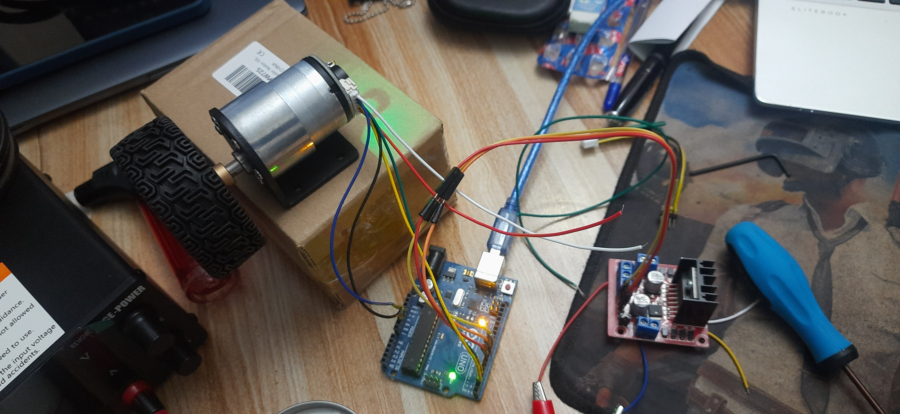
Bench Bring-Up — Isolating Each Ambiguity
The bring-up sequence deliberately isolated one variable at a time rather than debugging everything at once. Wiring the motor directly to the bench supply, bypassing the driver and Arduino entirely, confirmed the motor itself spins correctly down to 3V. L298N Channel B (OUT3/OUT4) then showed no movement and only about 0.01V measured at the output terminals despite correct control signals reaching it — diagnosed as either a dead channel or a broken control-signal path, rather than chased further. The pragmatic move was to swap to Channel A (OUT1/OUT2, ENA/IN1/IN2) and continue there instead.
A separate, initially confusing symptom — the motor seemingly not getting "enough voltage to rotate" — turned out to be the bench power supply's own current limit set too low, sagging voltage under the starting/stiction current a motor draws when it first begins moving. Not a driver or wiring fault at all.
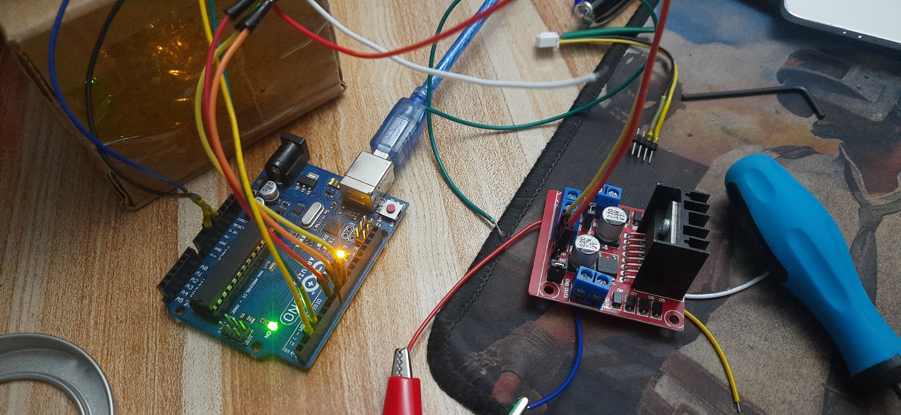
Encoder Wiring Verified
The encoder's Yellow/Green signal lines and Blue/Black power lines were verified independently of the motor driver, before trusting them in any control loop. Single-edge pulse counting on one interrupt pin, with direction sense read from the other channel, gave roughly 328–330 counts per manual full output-shaft revolution — matching the datasheet's math (11 pulses per motor revolution × 30:1 gearbox = 330 theoretical counts) closely enough to trust the wiring as correct.
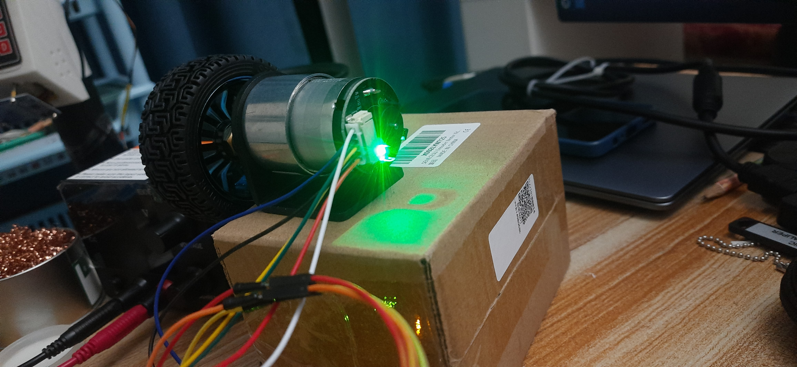
Closed-Loop Position Control — a Real Sign-Inversion Bug, Found Live
A real closed-loop position-control sketch — encoder-feedback PID driving to a target revolution count, not just open-loop spinning — was built and iterated through genuine bugs found via live diagnostic tracing, not guesswork. The first attempts produced two rounds with zero movement, followed by one round that ran away to -9124 counts (roughly 28 revolutions) before hitting a 6-second timeout. That prompted adding a hard runaway-abort safety cutoff and live per-loop count/error/PWM status printing, so any future fault would be immediately visible and diagnosable from the trace instead of only showing up as a bad final result.
The trace then revealed a genuine, consistent sign inversion: commanding "forward" — a positive PID output — reliably drove the encoder count negative on every run, which is textbook positive-feedback runaway rather than convergence toward a target. Fixed by swapping the IN1/IN2 polarity mapping in the direction-drive function, so a positive PID output actually increases the count instead of decreasing it.
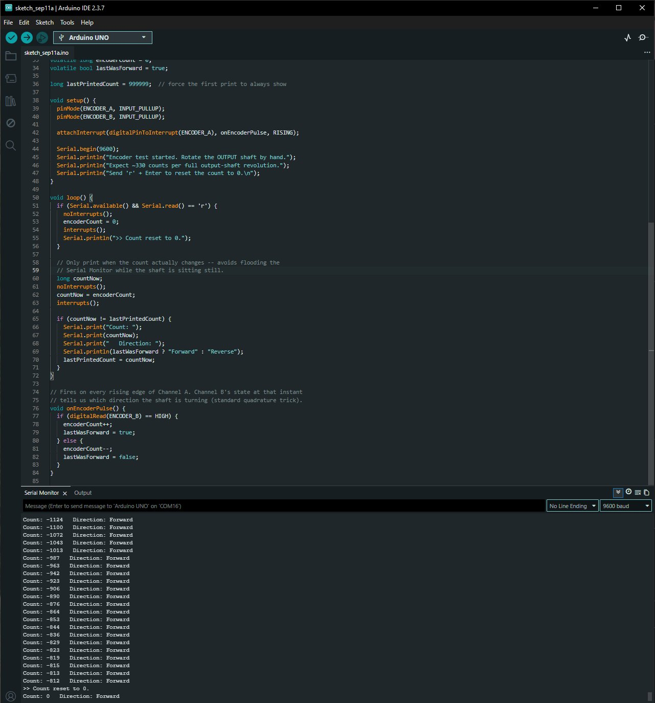
After the fix: a real 3-revolution closed-loop run settled at 988 counts against a 984-count target (3 × 328) — confirmed working, correcting overshoot in either direction as intended. The per-revolution constant was also recalibrated from 328 (a single hand-rotated measurement) to 329 (988 ÷ 3, averaged over a real motor-driven multi-revolution run) — a more reliable figure than the original manual count.
Scaling to Four Motors — a Deliberate Pause
Scaling this up to all four wheels on the Mega was discussed and mapped against the real constraint, not assumed to just work: the Mega's 6 hardware-interrupt pins are already down to just 18/19/20/21 free, since pins 2 and 3 are taken by the existing PIR sensors — exactly enough for 4 single-edge motor-encoder inputs and no headroom beyond that.
The explicit decision was not to port this Uno PID code directly into cara_main_mega.ino yet. Real load and gain requirements will differ once running in the full integrated system with all four motors, the chassis weight, and everything else drawing power at once — so today's scope was deliberately limited to proving the motors spin correctly and are fully controllable via encoder feedback on the bench, not integrating them into the main robot code.

Four new sketches came out of this session, all under Sensor_Testing_Codes/Before_Full_Assembly/Chassi_L298_Driver_Testing/: newGearMotorSingleTest.ino, newGearMotorFullPowerTest.ino (Channel A/B ramp and full-power bring-up), newGearMotorEncoderTest.ino (the manual pulse-count sanity check), and newGearMotorPositionPID.ino (the working closed-loop controller).
A Second Keypad, Bench-Tested to a Dead End — the Membrane Itself Is Bad
Separate from the motor work, a spare 4×4 matrix keypad (Alnicov membrane, 16 keys) was bench-tested on its own Arduino Uno, independent of the main robot's own keypad on the Mega. The board kept resetting mid-session on every keypress, printing garbled characters. A plain Serial-only sketch with no keypad code ran indefinitely without resetting, which ruled out the USB connection, power, and the board itself. Raw digitalRead testing on the row/column pins then found the actual cause: row pin D8 was stuck LOW at rest (Rows: 1101) — the Keypad.h library was reading that as a permanently-held key, and that's what triggered the erratic resets. Moving that row to D10 fixed it.
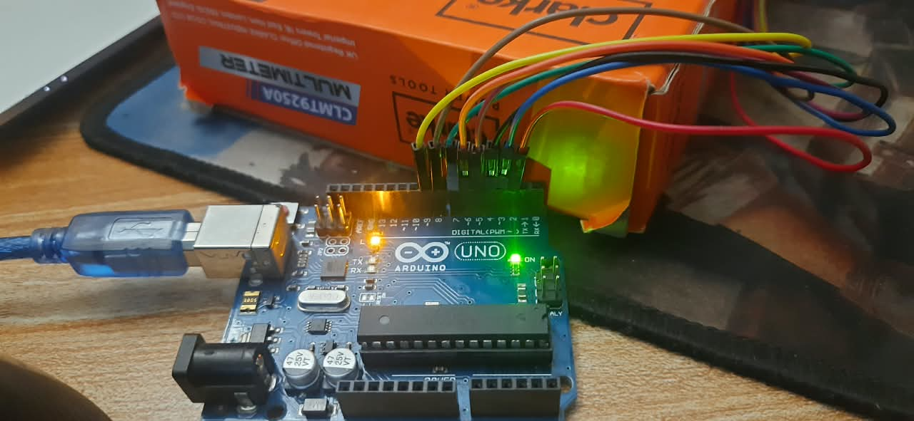
With that fixed, every candidate pin D2–D11 was individually grounded (INPUT_PULLUP plus a touch to GND) while watching raw digitalRead output — a full sweep rather than trusting the first working configuration. Every pin came back clean except D2, which never responded even after two firm retries, confirmed genuinely dead on this board. Swapped to D11, landing on a final confirmed-good pin set: rows = {3, 11, 10, 9}, columns = {7, 6, 5, 4}.
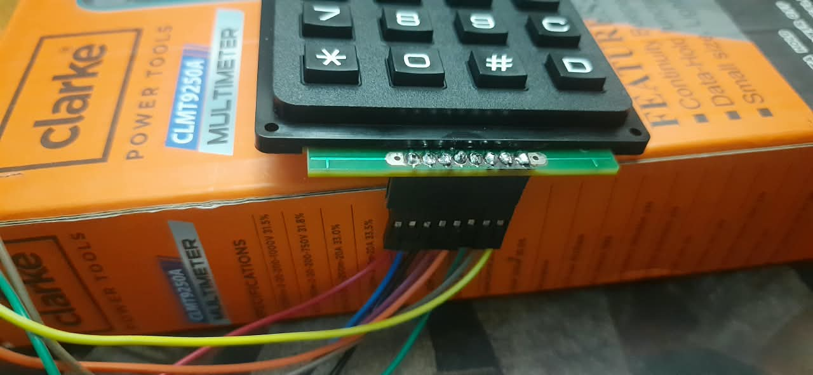
Even with all 8 Arduino pins individually verified good, the library-based test still missed most keys and occasionally swapped two (D and # confused), inconsistently between runs. A custom raw matrix-scan sketch — driving each row LOW by hand and reading columns directly, bypassing Keypad.h entirely — isolated it further: Row 0 (1,2,3,A) and Row 3 (*,0,#,D) consistently worked, but Row 1 (4,5,6,B) and Row 2 (7,8,9,C) never registered at all, no matter which already-verified-good Arduino pin was assigned to them. Since changing which pin drove which row had zero effect on which physical buttons failed, that ruled the Arduino and the code out completely.
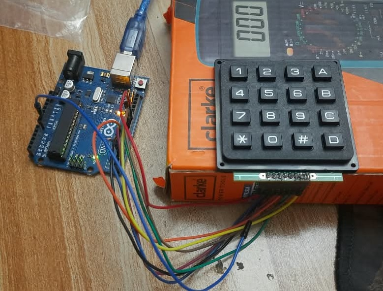
Conclusion: a hardware defect in the keypad membrane itself — worn or damaged carbon-trace contacts on two whole rows — not a wiring or code problem, confirmed via direct GND-continuity testing and raw matrix scanning rather than assumed. This unit needs replacing; the confirmed-good pin set (rows = {3, 11, 10, 9}, columns = {7, 6, 5, 4}) is expected to need no changes once a healthy keypad is swapped in.
A Real Wristband, Finally — and Camera-Switching Support in the Calibrator
The wristband color-fallback tracking, sketched back in Week 11 and only ever tested against paper swatches held up separately, got its first real physical band: a 4cm-wide strip cut from the same sheet of paper used in calibration testing, wrapped around the wrist. Every test from here on used this actual band, not a swatch held near the camera.
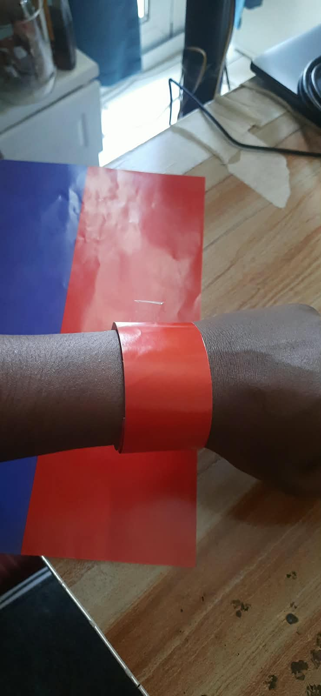
hsv_band_calibrator.py got two practical additions once real hardware entered the picture: startup camera probing across indices 0–5, confirmed by actually reading a frame rather than trusting isOpened(), with a console prompt when more than one camera is found, plus a live 'c' hotkey to switch cameras mid-session without restarting — needed once the laptop's own webcam and a USB camera were both in play. Separately, hsv_calibration_result.txt switched from overwrite-on-save to append-on-save, with each entry recording its matching capture image, timestamp, and camera index — every attempt now stays on record instead of only ever keeping the last one.
Two Real Failure Modes, Found via Live Testing
person_tracker_node.py turned out to already implement the intended face-fail → band-fallback → band-anchored face re-acquisition behavior in full — existing code, not new. The actual gap was that it had never been fed real HSV values. Those went in externally, through a new config/person_tracker_params.yaml loaded via launch/cara.launch.py and registered in setup.py — the node's own source left untouched for the values themselves. A real shape filter was added to its _detect_band() function too: rejects any color-matched contour whose bounding-box aspect ratio doesn't fall within tolerance of the band's real 3:2 proportions, checked orientation-agnostic so landscape or portrait presentation doesn't matter. A new standalone tool, band_shape_test.py, mirrors this exact detection logic against the laptop's own webcam — reading the same YAML so it can't drift out of sync with the real node — with every candidate contour drawn red or green live.
Ten real tests against the actual band, across near/distance/lighting variations, exposed two genuine failure modes rather than confirming the fix worked on the first try. First: the band's color mask repeatedly split into two vertical slivers under near, angled lighting — a specular highlight down the middle of the curved paper cutting the blob in half. Whether either half happened to land inside the aspect-ratio tolerance was pure luck, no reliable pattern either way.
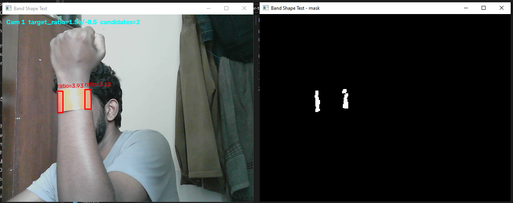
Second: a same-colored full sheet of paper, held up deliberately next to the band as a confusion test, beat the band outright on area — and critically, a full sheet's aspect ratio held portrait (roughly 1.4:1) sits inside the same tolerance window the band itself needs, so the shape filter alone would not have reliably told the two apart even with it in place.
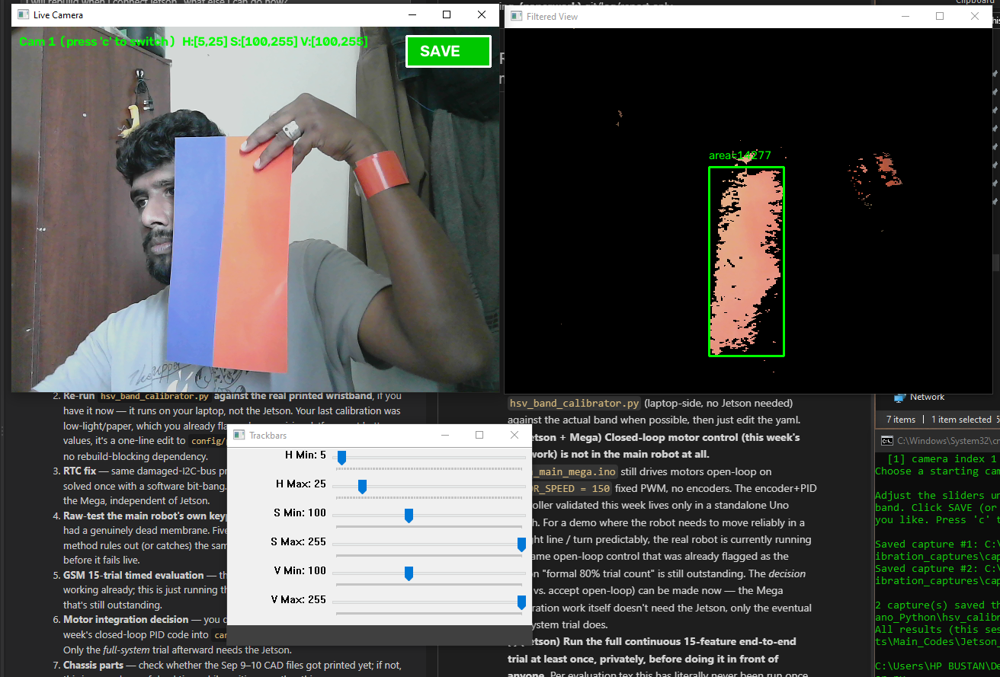
Both root causes got fixed directly rather than tuned around. A targeted morphological CLOSE step (a 15×5 rectangular kernel, sized to bridge the specific gap observed) runs before the existing noise-cleanup erode/dilate, so the band registers as one blob instead of two unreliable slivers. A new band_max_area upper bound (20000, calibrated against the band's own real solid-blob area of roughly 6000px at normal distance) stops a much larger same-colored object from winning on size alone. Both changes were mirrored into band_shape_test.py too, which now prints each candidate's area and specific rejection reason — "too big" versus "bad shape" — instead of just accept or reject, for faster diagnosis next round.
Confirmed Fixed, With an Honest Range Limit
A full batch of 51 band_shape_test.py captures against the real band, after the close-kernel and area fixes, confirmed the fix directly: the band now registers as one solid accepted blob instead of the earlier two-sliver split.
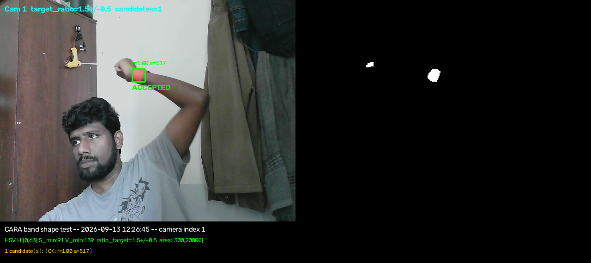
At real operating distance, though, the band's projected size dropped below the minimum-area threshold entirely — zero candidates. That's a genuine field-of-view/resolution limit, not a software bug to chase further, and it's documented as an accepted, known limitation in config/person_tracker_params.yaml and TODO_DEMO_READINESS.md rather than silently dropped: this fallback works close-up, and drops out beyond a few feet.
A silent crash, also fixed: after the camera-selection prompt, band_shape_test.py sometimes died with no Python traceback at all — diagnosed as a native Windows DSHOW driver issue, not a code exception. The probe step opens and releases every candidate camera, then immediately reopens the chosen one, and some webcam drivers don't handle that rapid release-then-reacquire cleanly. Fixed with a 0.3-second settle delay at every release-then-reopen handoff, in both band_shape_test.py and hsv_band_calibrator.py.
A Bit-Banged RTC Driver — Written, Not Yet Testable
With no motors, battery, or Jetson on hand today, one more piece of firmware got written anyway: a SoftI2C_RTC driver for cara_main_mega.ino, bit-banging the DS3231 on the LCD's existing SDA=20/SCL=A0 bus (a multi-drop I2C bus — the LCD's 0x27 and the RTC's 0x68 addresses don't conflict), reusing the exact same technique that fixed the LCD's own damaged-pin problem back in Week 10. It gates every real use behind an isConnected() check, the same fail-safe pattern the LCD driver already uses.
Honestly flagged, not claimed working: there's no way to verify it actually compiles without arduino-cli or the Arduino IDE, neither of which was available today — so this is written but unverified, not a confirmed fix. cara_main_mega_gsm.ino has the identical disabled RTC block and was deliberately left unpatched, pending confirmation of which file is actually the one running on the real robot.
Report Sync, and What Deliberately Stayed Out of It
The LaTeX report's Evaluation and Conclusion sections were updated to reflect the new motors' real specs and the closed-loop encoder-PID validation, superseding the earlier asymmetric-turn workaround proposal — that workaround was explicitly justified by "no closed-loop feedback," a premise that no longer holds now that encoder feedback actually exists. Real submission photos also finally went in: cara_robot.jpg and test_setup.jpg, filling the placeholder figure slots that had been sitting empty since Week 12.
Deliberately not added to the report: the sign-inversion bug itself. That bug was found and fixed on a standalone Arduino Uno bench rig, not the real Mega board that actually runs CARA, so it stayed out of the dissertation for that reason — a report-specific call, not a reason to leave it out of this blog, where it's covered in full above.
Some housekeeping too: DAILY_LOG.md and the new TODO_DEMO_READINESS.md (a project-wide gap audit specifically aimed at live-demo readiness, tiered by what each item actually needs — bench, Mega, Jetson, or just paperwork) both moved to .gitignore — personal working notes, not meant for repo history.
What Did Not Go Well (So Far)
L298N Channel B's fault was never actually root-caused — it was avoided by switching to Channel A, not diagnosed as dead-chip vs. broken-signal-path. The early closed-loop attempts included a real runaway to -9124 counts before the timeout caught it; bench-only and not dangerous in itself, but a genuine reminder of why the safety cutoff and live tracing were added rather than optional. The spare keypad turned out to be genuinely defective and needs replacing before this line of testing can continue. The wristband fallback drops out entirely beyond a few feet — an accepted limitation, not a solved problem. The new RTC driver is written but completely unverified — no compile check, let alone a bench test. None of this week's work — new motors, keypad, wristband, or RTC — is integrated into the main robot yet; today's session was scoped entirely to laptop-side and paperwork items since no motors or battery were on hand. Everything carried in from Week 13 is still open too: the shared-power fix for RFID/tilt/ultrasonic is in progress but not retested, obstacle sensors remain unsafe for live movement until that's done, and this week's new covers/holders are still just design files.
Week 14 Checklist (So Far)
| New motors' torque margin verified against datasheet + estimated weight | ✓ Complete |
| Motor spins correctly on bench supply, isolated from driver/Arduino | ✓ Complete |
| L298N Channel A bring-up (after Channel B found dead) | ✓ Complete |
| L298N Channel B fault actually root-caused | ⏳ Avoided, not diagnosed |
| Encoder wiring verified (pulse count matches datasheet math) | ✓ Complete |
| Closed-loop position-control sketch built and debugged | ✓ Complete |
| Sign-inversion bug found live and fixed | ✓ Complete |
| 3-revolution closed-loop run confirmed accurate (988/984 counts) | ✓ Complete |
| 4-motor scaling constraint mapped (Mega interrupt pins) | ✓ Complete |
| New motors integrated into cara_main_mega.ino / main robot | ⏳ Deliberately not started |
| Shared-power fix for RFID/tilt/ultrasonic retested | ⏳ In Progress |
| Wristband HSV calibration run against the real printed band | ⏳ In Progress |
| New covers/holders printed and test-fitted | ⏳ In Progress |
| Spare keypad bench-tested, board-reset bug fixed (D8→D10) | ✓ Complete |
| Full pin sweep D2–D11, dead pin found and swapped (D2→D11) | ✓ Complete |
| Root cause isolated to the keypad membrane itself | ✓ Complete |
| Replacement keypad obtained and re-tested | ⏳ In Progress |
| Real physical wristband built (4cm paper strip) | ✓ Complete |
| hsv_band_calibrator.py: multi-camera probing + live switch hotkey | ✓ Complete |
| hsv_calibration_result.txt: append-only history (was overwrite) | ✓ Complete |
| Real HSV values wired into person_tracker_node via YAML | ✓ Complete |
| Band shape+size filter added (3:2 aspect, min/max area) | ✓ Complete |
| band_shape_test.py standalone validator built | ✓ Complete |
| Sliver-split failure mode found and fixed (morphological close) | ✓ Complete |
| Same-color-paper confusion found and fixed (max-area bound) | ✓ Complete |
| Band confirmed as single solid blob across a 51-capture batch | ✓ Complete |
| Wristband fallback usable beyond a few feet | ⏳ Accepted limitation, not solved |
| Silent DSHOW camera-driver crash fixed (settle delay) | ✓ Complete |
| SoftI2C_RTC driver written for cara_main_mega.ino | ✓ Complete |
| SoftI2C_RTC driver compiled/bench-tested | ⏳ Not possible today — no tooling/hardware |
| LaTeX report Evaluation/Conclusion synced to motor progress | ✓ Complete |
| Real submission photos added (cara_robot.jpg, test_setup.jpg) | ✓ Complete |
| DAILY_LOG.md / TODO_DEMO_READINESS.md moved to .gitignore | ✓ Complete |